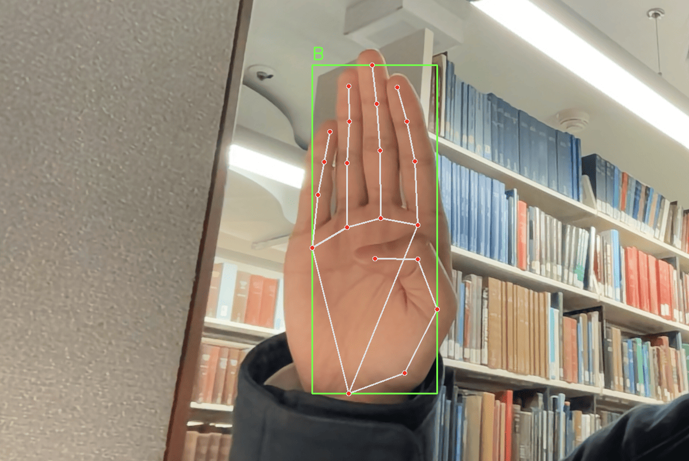
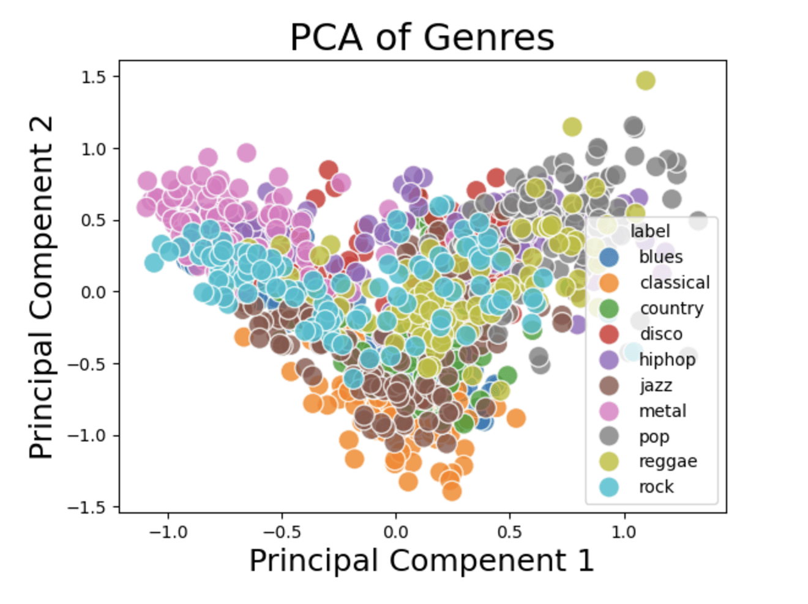
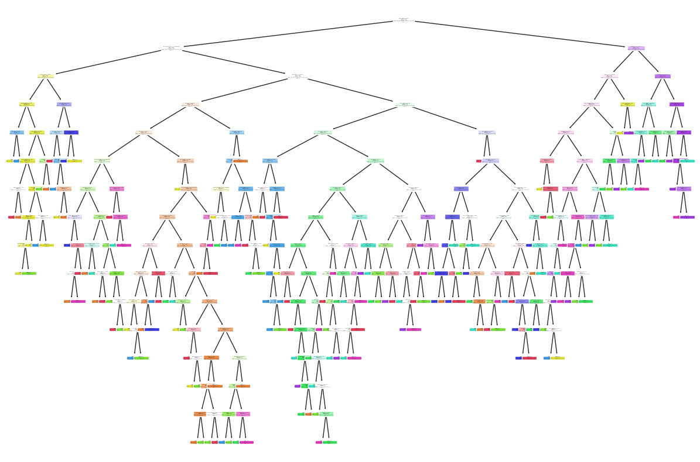
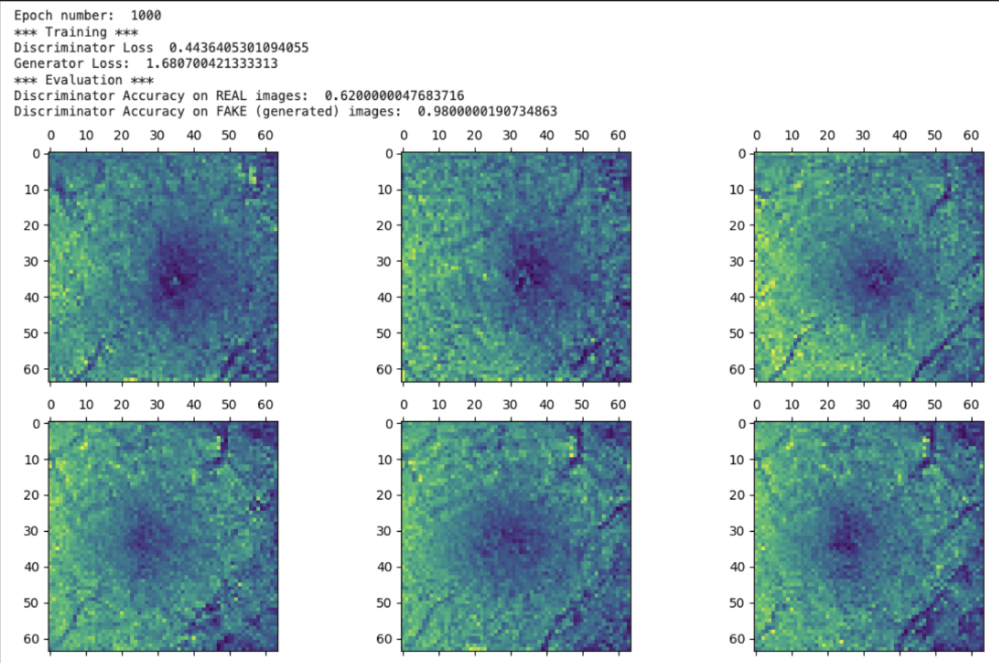
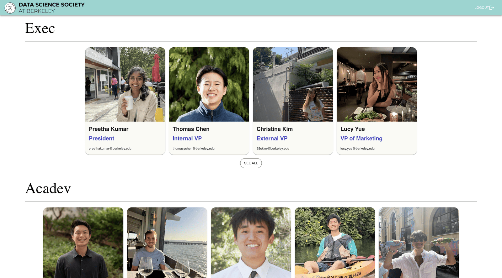
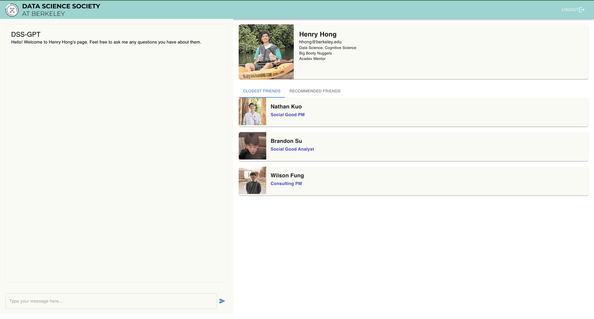
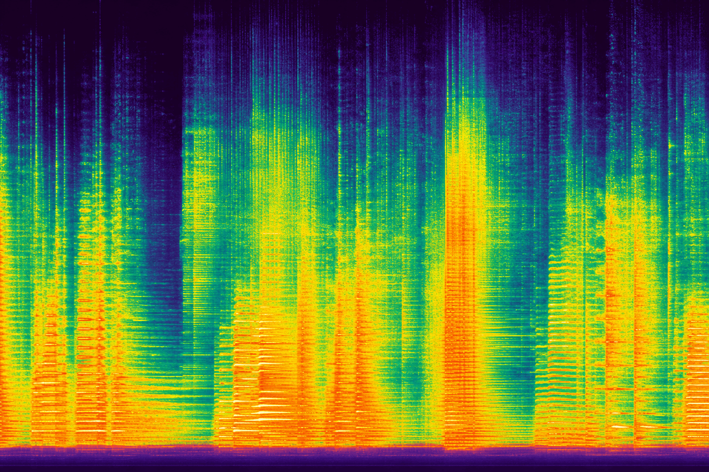

Teaching and supporting 1,000+ students through sections, exam prep, and lab authoring in UC Berkeley's flagship data science course
Summer 2025
Amazon SDE Intern
Built a multi-agent pipeline on AWS Bedrock to detect anomalous tax rates in 10M+ invoices/year, preventing $2.27M in overcharges
2025
ML Researcher, BAIR Speech Lab
Co-authored the Speech World Model (accepted to ICLR 2026), a causal-graph framework unifying speech understanding and reasoning
Dec. 2025 – Present
President, Data Science Society
Leading Berkeley's premier data science organization of 100+ members and organizing the 7th Annual Datathon for 500+ participants
2026 – Present
Amazon SDE Intern
Building a finance knowledge service with hybrid OpenSearch retrieval (BM25 + kNN) to scale procedure automation toward thousands of workflows
Incoming
Data 102 TA / UCS2
Joining the course staff for Data 102: Data, Inference, and Decisions at UC Berkeley
Software Development Engineer Intern
Amazon
Designed and deployed a multi-agent pipeline leveraging AWS Bedrock to detect anomalous tax rates in 10M+ invoices/year
Built a RAG-based database for tax rate recovery and a tax-line extraction agent in SageMaker to parse invoices into structured schemas
Created retrieval and web-scraping agents to cross-verify tax data against state repositories, cutting manual review 90% and preventing $2.27M in overcharges
Benchmarked AWS Strands SDK vs. the Bedrock API, finding Bedrock 2.4x faster per invoice with 3.2x fewer tokens
Co-authored the Speech World Model, accepted to ICLR 2026, introducing a causal-graph framework that unifies speech understanding and reasoning through interpretable modular inference.
Developed a semi-supervised causal inference pipeline that improved reasoning accuracy by 49% while reducing compute cost to 20 GPU hours on large-scale speech datasets.
Fine-tuned LLaMA 3.1-8B and Qwen2-Audio on graph-guided reasoning tasks in PyTorch, surpassing open-source baselines.
Building a finance knowledge service to scale procedure
automation from 15 manual workflows toward thousands by
resolving workflow steps to internal APIs
Implemented hybrid OpenSearch retrieval with BM25 and kNN
search to map ambiguous finance operations to trusted API
entries
Integrated internal code-search, source-control, and
knowledge APIs to extract API metadata, aliases, docs, and
cited evidence
Designed trust-gated ingestion with confidence scoring and
single-writer validation to keep records grounded and
deduplicated
A machine learning model that classifies American Sign
Language gestures.

This project focused on creating a robust machine learning
model to classify American Sign Language (ASL) gestures,
leveraging both convolutional neural networks (CNNs) and
random forests to achieve accuracies of 80.3% and
97.2%, respectively. To overcome the challenges of
limited pre-existing datasets, I generated my own training
data by capturing real-life images of ASL gestures, ensuring
model generalizability. The project utilized MediaPipe for
hand landmark detection, followed by advanced feature
extraction for training the models. The classifier
demonstrated real-time gesture recognition capability,
making it highly applicable for live ASL translation
systems.
Exploring machine learning for audio classification.

Principal Component Analysis performed on the 10 genres.
Our team analyzed a dataset of
1,000 audio files across 10 genres to classify
music genres using various machine learning models. By
leveraging Random Forest, K-Nearest Neighbors, and Support
Vector Machines, we refined our approach to achieve a
highest accuracy of 80.6%. Additionally, neural
networks were employed for pattern recognition, enhancing
classification precision.

First tree of our trained Random Forest model.
While addressing challenges such as outlier detection and
confusing column names, we improved our understanding of
machine learning and audio signal processing. The project
showcases the power of statistical modeling and neural
networks in complex data classification tasks.
Second-Place Winner, Berkeley's 2023 Annual Datathon for
Social Good
Deep Oculos leverages Generative Adversarial Networks (GANs)
to create synthetic retinal eye motion videos and Long
Short-Term Memory (LSTM) networks for disease-related eye
motion trace prediction. This project was developed to aid
C. Light Technologies in disease modeling and
diagnostics by simulating patient-specific retinal
movements.

Using a four-layer LSTM with dropout regularization, we
achieved a 93.4% accuracy in predicting
disease-related pupil movements. Our GAN generated synthetic
videos, starting at 64x64 resolution and upscaled to
512x512, embedding pupil trace statistics directly
into the frames. This innovative approach earned our team
the 2nd Place award at UC Berkeley’s 5th Annual
Datathon for Social Good.
Tech: TensorFlow • Keras • Scikit-Learn • Seaborn •
Pandas
An interest-based matching platform connecting students and
alumni through shared interests.

General member directory showcasing all members of the Data
Science Society.

Interactive member profile with GPT-powered learning and
friend recommendations via a Graph Neural Network.
CommonGround is a matching platform I built and launched for
500+ students and alumni, connecting members through
shared interests to spark new friendships. Developed with
React and Flask, it features a Graph Neural Network
implemented in PyTorch that transforms Airtable profiles into
graph inputs and serves recommendations, achieving an
ROC AUC of 0.72 in link prediction between members.
Secure login was integrated via Google OAuth 2.0, and
GPT-powered responses enhanced engagement across the
platform.
Tech: React • Flask • PyTorch • Graph Neural
Networks • Airtable API • Google OAuth 2.0
A transfer-learning pipeline for classifying urban sounds
from their spectrograms.

This project built a transfer-learning pipeline for 10-class
UrbanSound8K classification, improving held-out
accuracy from 24.4% with scratch training to
92.6% with full fine-tuning. Variable-length .wav
clips were converted into normalized spectrogram tensors
through resampling, padding/truncation, and resizing. I
adapted ConvNeXt-Base and benchmarked scratch
training, frozen-backbone transfer learning, and full
fine-tuning, with reproducible configs and metrics reports
for each experiment.